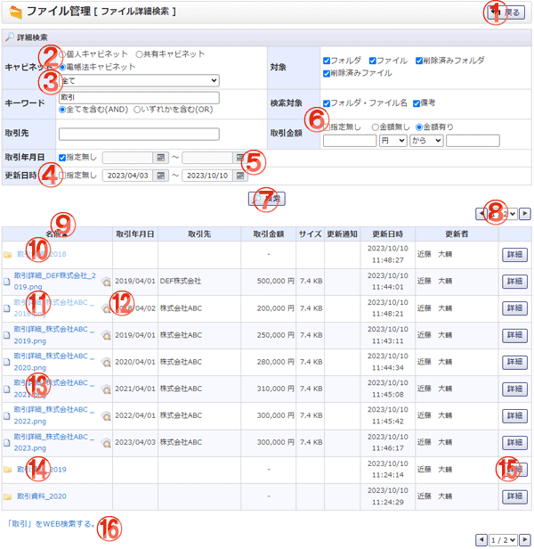

ファイル詳細検索を行う画面です。

機能説明
戻るボタン遷移元の画面へ遷移します。 |
個人・共有・電帳法キャビネットラジオボタンラジオボタンでキャビネットコンボに表示するキャビネットを選択します。 |
|---|---|
キャビネットコンボキャビネットの一覧が表示されます。 |
更新日時指定無しチェックチェックを付けると日時が指定不可になります。チェックを外すと日時が指定可になります。 |
カレンダーボタン日付選択カレンダーを表示します。 |
取引金額指定無しチェックチェックを付けると取引金額が指定不可になります。チェックを外すと取引金額が指定可になります。 |
検索ボタン入力した検索条件からフォルダ・ファイルの検索を行い、検索結果を表示します。 |
ページングコンボ・前頁・次頁ページングコンボで任意のページへ、前頁アイコンクリックで前のページへ、次頁アイコンクリックで次のページへそれぞれ遷移します。 |
ヘッダタイトルクリックによって一覧のソート条件の切り替えを行います。 |
削除済みフォルダ名クリックしたフォルダの詳細画面へ遷移します。 |
削除済みファイル名ファイルをダウンロードします。 |
ファイルプレビューボタンファイルのプレビューをポップアップで表示します。 |
ファイル名ファイルをダウンロードします。 |
フォルダ名クリックしたフォルダの詳細画面へ遷移します。 |
詳細ボタンフォルダ・ファイル詳細画面へ遷移します。 |
検索文字列「「×××」をWEB検索する」リンククリックで、表示されている検索ワードでウェブ検索を行います。 |
表示・入力項目説明
キャビネット
検索するキャビネットを選択します。
キーワード
検索するファイル・フォルダのキーワードを入力します。(50文字以内)
取引先
検索するファイルの取引先名を入力します。（50文字以内）
取引年月日
検索するファイルの取引年月日を指定します。
更新日時
検索するファイル・フォルダの更新日時を指定します。
対象
検索する対象を選択します。
検索対象
キーワードの検索対象を選択します。
取引金額
検索するファイルの取引金額を指定します。